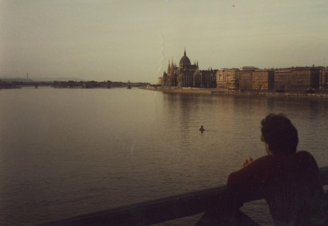
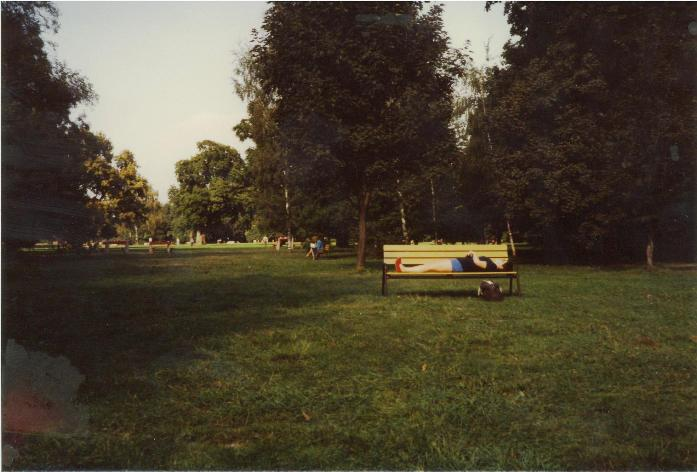

Inter Rail 1984 Day 7
Saturday 8th September 1984
Woke up at 8.55am. Jon was still asleep so had the luxury of picking up my book and reading for 20 minutes.
By the time we got up, washed and dressed it was about 10.15am. Headed straught into town by catching the 73 bus but found out that this one
didn't take us to Keleti Pu.

Whilst making our way there on foot my left flip flop gave up the ghost. Spent 10 minutes looking for a shop selling tape or a shoe shop but
eventually gave up and caught a number 4 tran to Keleti Pu. Split our forces. Jon went into the station to try but ultimately fail to reserve
our train seats to Lake Balaton, whilst I went off to try and find new footwear. I actually found a self-serve shoe shop. Almost plumped for a
pair of Hungarian made Dr Scholls at 378 ft but then found a pair of maocassin type shoes for 155 ft i.e. £2.46. Beautiful bright red things.
Met Jon in the tourist office and then caught the Metro to Deli Pu. For 1ft i.e. approx 1.5p you get to travel the entire length of a Metro
line, from one side of the city to the other. The service was excellent with clean modern trains and stations. Budapest is an amalgam of two
different towns. Pest is the modern part on one side of the Danube river whilst Buda is the old town on the other side of the river. We headed
off for Old Buda.
It is situated high up on a rock so there were hundreds of bloody steps to climb. Once up, the view over the Danube and the Pest area of town
were well worth it. Old Buda Church was amazing as every single wall inside had been painted in bright colours. We also caught part of a
service in which a guy was ringing a bell frequently.
Had lunch in a park. Fried breadcrumbed chicken breast sandwich and water. Wandered along the length of the ramparts before heading back down
into the modern town. Decided to head out towards Margaret Island, located in the middle of the Danube. Enroute we discoved that all the shops
shut on Saturday afternoons. Finally found one exception to the rule and bought a large piece of bread, 2 packets of biscuits, 2 large portions of
cooked meats, half a pound of cheese and a packet of butter for the princely sum of £1.20.
Got onto the island without finding a single postcard. Had a quick wander around the park, then sat on a park bench and did bugger all for an
hour whilst Jon did a sketch of the park. It was absolutely pathetic! Found some remains and a nearby beer seller playing Rolling Stones music.
Finally headed back off to civilisation and wandered past the Parliament buildings by the banks of the Danube.

Noticed that almost all the statues on the ornate building had been removed. Assumed they were felt to be a bit too Christian for the
Communists. Got the map out and decided to eat in old Buda. Crossed the Danube for the 6th time this trip via a chain bridge. Passed an
Asterias on a flower bed and climbed up to the old Imperial Palace which is now a museum and art gallery.
It was very cobbled which was not a good idea on feet begining to object to the new entirely flat shoes. Saw the first cats of the trip being
fed by an old lady and a badly bullet scarred building. Thought it might have been used as Nazi headquarters during WW2.
Spent some time wandering around town trying to find a restaurant for dinner. I even put my skirt on to try and get into a very interesting
looking one but were told it was full. Ended up in one slightly further up the street where it seemed that anything cheap on the menu wasn't
available. Had Hungarian goulash in a cup followed by a meal for 2 people entitled Transylvanian Wooden Plate. It turned out to be a
breadcrumbed mixed grill type thing served with a mixed salad. Delicious.
The meal was rounded off by a 0.5 litre glass of East German beer. Pretty potent. The whole meal came to just over £3 a head!! Caught the
underground and bus back to the flat and went straight to sleep after setting the alarm for 6.00am.
Notes
- Prices here seem to be about the same as home for luxury or consumer goods. However basics such as food and travel are very
cheap by our standards. Thus it appears that take home pay is much less and "nice" things are much more expensive when compared to home.
- We're getting a bit sick and tired of paying 2ft everytime we go to a public loo. They're not spectacular. All you get is a couple of
sheets of loo paper. Not great value for money